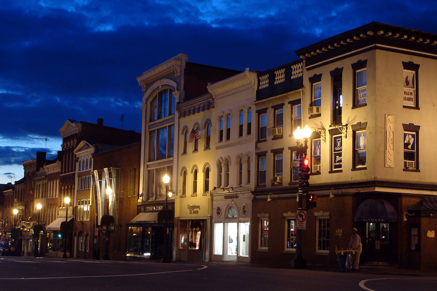
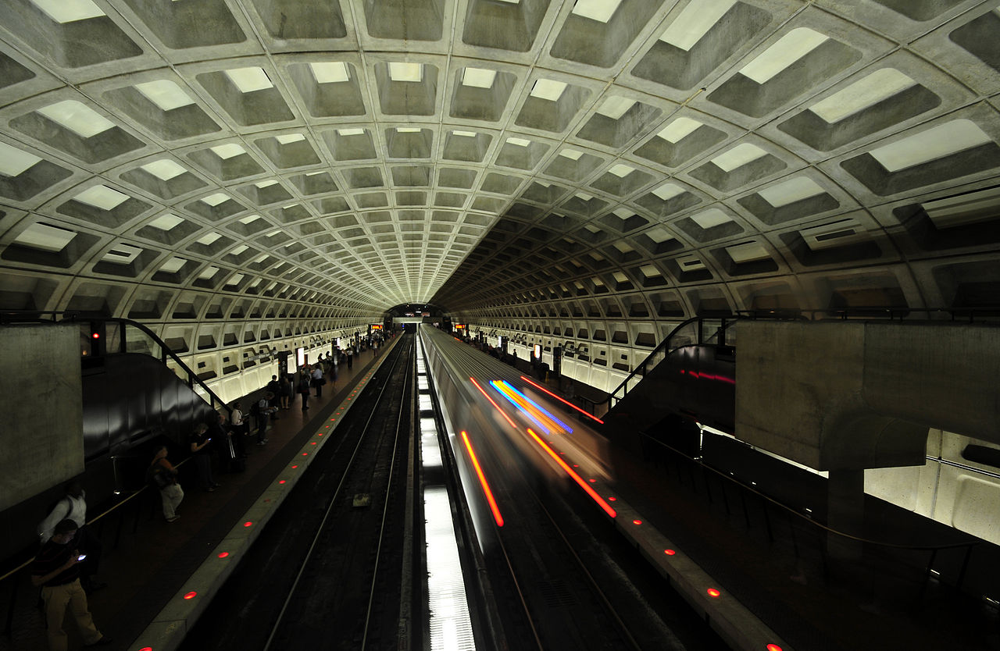

Explore Washington, D.C.
Walking Tours With Purpose
WalkDC is what you are looking for if you want engaging and informative walks combining the best of local architecture, history, and culture. We also hope you get some good execise!
Leave a Review!
Classic Tour
Distance: 4.5 MilesThis walking tour combines many famous D.C. monuments and tourist areas, along with lesser known architectural and historical spots. Ends with a great view of D.C.

Late Night Tour
Distance: ? MilesImpulse travelers, late night business trip stragglers, and night owls will enjoy a walk through the vibrant cultural hubs of Logan Circle and Dupont Circle at a later than usual time of night.

Urbanism Tour
Distance: ? MilesFocusing on D.C.'s excellent public transit and walkability, this tour is perfect for those interested in urbanism, covering the challenges and successes found in one of the most urbanist US cities.